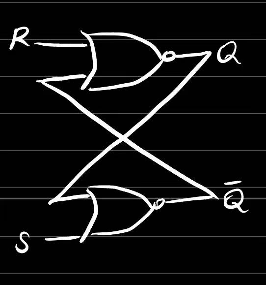
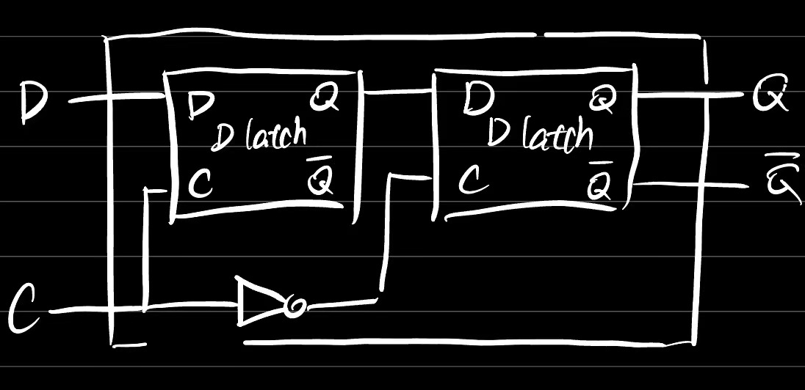

- 世界上第一台通用电子计算机
- 主要设计者
- EDVAC的特点
- 由5个基本部分组成
- 指令和数据采用二进制，极大简化了逻辑线路
- 实现“存储程序概念”，大幅提升了任务效率
- 第一台冯诺伊曼结构的计算机
- 开启了商用计算机的时代
- 分类
- 超级计算机
- CDC6600
- 适用于高度计算密集型的科学计算任务
- 前3名
- 大型计算机
- IBM701
- 以面向大容量数据的事务处理为主，兼顾科学计算
- 小型计算机
- PDP-8
- 应用领域非常广泛，涉及事务处理和科学计算等诸多方面
- 微型计算机
- Altair8800
- 个人处理数据、文字、图形、图像、声音等
- 家用电器、仪器仪表、工业设备的控制等
- 冯诺伊曼结构对要点
- 计算机由运算器、控制器、存储器、输入设备和输出设备5部分组成
- 数据和程序均以二进制代码形式不加区别地存放在存储器中，存放位置由存储器的地址指定
- 计算机在工作时能够自动地从存储器中取出指令加以执行
- 刚启动时发生了什么
- 系统启动
- 从BIOS芯片取第一条指令，跳转到BIOS另一条指令，简单地配置主存
- 将BIOS指令搬到主存中（BIOS太慢了且不能写，保证地址是一样的，北桥芯片特殊设计，读发送到BIOS，写发送到主存
- 设北桥到寄存器，掐断北桥读“发送到BIOS”
- 执行BIOS程序，配置...
- 从硬盘搬运操作系统
- bios严格算()
- 从C语言到机器语言
- C语言->汇编语言->机器语言
- 高级语言源程序->预处理器->高级语言程序->编译器->汇编语言->汇编器->目标文件(机器语言)->(+库文件(机器语言))链接器->可执行文件(机器语言)
- 冯诺依曼结构和具体实现
- CPU - CA CC
- 主存 - M
- CPU-北桥芯片-主存
- 南桥 - I/O
- 硬盘 - R
- GPU有时候承担CA CC I/O功能
- Intel 8086
- 内部的通用寄存器为16位
- 对外有16根数据线和20根地址线,可寻址的内存空间为1MByte（220）
- 物理地址的形成采用“段加偏移”的方式
- Intel 80286
- 希望访问24位
- 引入了“保护模式”，但是机制有缺陷
- 实模式
- 8086只有一块内存供以使用
- 286支持上述模式，称为实模式
- Intel 80386（IA-32的开始）
- 80x86系列中的第一款32位微处理器
- 地址总线扩展到32位，可寻址4GB的内存空间
- 改进了“保护模式”（例如，段范围可达4GB）
- 增加了“虚拟8086模式”, 可以同时模拟多个8086微处理器
- AMD Opteron
- x86扩展到64位的第一款微处理器
- 可以访问高于4GB的存储器
- 兼容32位x86程序，且不降低性能
- x86-64运行模式
- 传统模式：32位，以前的程序不需要重新编译
- 长模式：
- 纯64位模式，原程序需要重新编译
- 兼容模式，内存变大了，不需要重新编译已有程序
- IA-32和8086的寄存器模型
- 通用寄存器
- AX：低16位
- AL：低8位
- AH：低16位的高8位
- EAX：32位
- 指令指针寄存器：IP，EIP
- 标志寄存器：(E)FLAGS
- 段寄存器
- 段寄存器的说明
- 段寄存器的功能在实模式下和保护模式下是()
- CS
- 代码段寄存器（Code Segment）
- 用CS:IP指示下一条要执行的指令地址
- DS
- ES
- 附加段寄存器（Extra Segment）
- 用ES:DI指示串操作的目的操作数的地址
- SS
- 堆栈段寄存器（Stack Segment）
- ESP/SP或EBP/BP指示堆栈栈顶的偏移地址
- SP->堆栈指针，BP->（堆栈）基址指针
- 8086
- 8086的物理地址生成
- 3000H：H是16进制
- 将20位物理地址分成两部分的问题：
- 段号寄存器与其他寄存器不兼容，操作麻烦
- 每个逻辑段固定占用64K字节，会浪费存储空间
- 附加段
- 附加的数据段，也用于数据的保存
- 某些串操作指令将附加段作为其目的操作数的存放区域
- IA-32
- IA-32的存储器寻址
- 保护模式下，段基址不在CS中，而是在内存中
- GDT：全局描述符表
- GDTR：全局描述符表的地址寄存器
- GDT可在系统中的任何存储单元，通过GDTR定位
- 描述符：基地址、权限、段界限、其他(32位)
- x86-64
- 描述符中没有了段基址和段界限，只有访问权限字节和若干控制位。所有的代码段都从地址0开始。
- Intel格式与AT&T格式
- Intel格式
- Intel制定，x86相关的文档手册使用该格式
- 主要应用在MS-DOS和Windows等系统中
- AT&T格式
- AT&T制定，起源于贝尔实验室研发的Unix
- 最初用在PDP-11/VAX等机型，后移植到x86
- 主要应用在Unix和Linux等系统中
- 区别1：前缀（后缀）
- Intel语法，寄存器和和立即数都没有前缀，十六进制和二进制立即数后缀分别为h和b，以字母开头的十六进制数必须加0
- AT&T语法，寄存器使用前缀“%”，立即数使用前缀“$”，十六进制立即数使用前缀“0x”
- 区别2：操作数方向
- Intel语法，第一个操作数是目的操作数，第二个操作数是源操作数
- AT&T语法，第一个数是源操作数，第二个数是目的操作数
- 区别3：内存单元操作数
- Intel语法，基寄存器用“［］”标明
- AT&T语法，基寄存器用“（）”标明
- 区别4：间接寻址方式
- Intel语法，segreg:[base+index*scale+disp]
- AT&T语法，%segreg:disp(base,index,scale)
- 区别5：操作码后缀
- Intel语法
- 内存单元操作数带前缀，以指出操作数的大小
- dword ptr；word ptr；byte ptr
- AT&T语法
- 操作码带后缀，以指出操作数的大小
- l：32位/长整数；w：字/16位；b：字节/8位
- 汇编语言程序的组成
- 分段结构
- 按段进行组织，最多由4个段组成（代码、数据、附加、堆栈）
- 每个段以“段名 SEGMENT”开始，以“段名 ENDS”结束
- ASSUME CS:CODE, DS:DATA, SS:STACK
- 语句行
- 伪指令
- 定义变量
- EQU：
- =：
- ORG说明符：
- 格式：ORG 常数表达式，作用：指定当前可用的存储单元的偏移地址为常数表达式的值
- EVEN说明符：
- 格式：EVEN，作用：将当前可用的存储单元的偏移地址调整为最近的偶数值
- PROC说明符
- 格式：过程名 PROC 类型属性名
- 说明：从“过程名”代表的地址开始定义一个过程；“类型属性名”可选择NEAR（近过程）或FAR（远过程），默认为NEAR
- ENDP说明符
- 格式：过程名 ENDP
- 说明：表示该过程到此结束。此处的“过程名”必须与过程开始时PROC左边的“过程名”相同
- 把数据或地址传送到寄存器或存储器单元中
- 格式
- MOV指令的传送限制
- 立即数不能作为目的操作数
- 存储单元之间不能直接传送
- 立即数不能直接送段寄存器
- CS不能作为目的寄存器
- 段寄存器之间不能直接传送
- XCHG OPR1, OPR2
- (交换)
- 两个操作数的位宽要相同
- 存储单元之间不能直接传送
- 不允许使用段寄存器
- XLAT
- 从BX中取得数据表起始地址的偏移量
- 从AL中取得数据表项索引值
- 在数据表中查得表项内容
- 将查得的表项内容存入AL
- 作用
- 完成加、减、乘、除等算术运算
- 提供运算结果调整、符号扩展等功能
- 操作数的限制
- 对于双操作数的指令，限制与MOV指令相同
- 目的操作数不能是立即数或CS寄存器
- 两个操作数不能同时为存储器操作数
- ADD DST, SRC
- ADC DST, SRC：含进位的加
- INC OPR：加1
- DAA指令
- （加法十进制调整指令）
- 跟在二进制加法指令之后
- 将AL中的“和”数调整为压缩BCD数格式
- 调整结果送回AL
- BCD：把16进制数换成10进制，每两个字符占一个byte
- 改变指令执行顺序
- 直接 / 间接；有条件 / 无条件
- 无条件转移指令 - 直接转移
- JMP SHORT LABEL
- 操作：IP←IP+8位的位移量（-128~127Byte）
- 位移量是一个带符号数，为LABEL的偏移地址与当前EIP/IP值(下一条指令的起始地址)之差
- JMP NEAR PTR LABEL
- 操作：IP←IP+16位的位移量（±32KByte）
- 从80386开始，近转移可以使用32位的位移量
- JMP FAR PTR LABEL
- 操作：IP←LABEL的偏移地址；CS ←LABEL的段基值
- JMP DWORD PTR OPR
- 寻址到OPR指定的存储器单元双字
- 将该双字中的低字送到IP寄存器中
- 将该双字中的高字送到CS寄存器中
- 条件转移指令的说明
- 根据当前的状态标志位决定是否发生转移
- 8086中，所有的条件转移都是
- 短转移
- 同一代码段内，-128~127字节范围内
- 从80386起，条件转移指令可以使用32位的长位移量
- LOOPNE/LOOPNZ指令
- LOOPNE LABEL / LOOPNZ LABEL
- CX←CX-1
- 若CX≠0且ZF=0，转移到LABEL处继续执行，否则，结束循环，顺序执行下一条指令
- 处理器控制指令
- STX：把X(某标志位)置1
- CLX：把X(某标志位)置0
- CMX：把X(某标志位)反转
- x86指令的发展
- 对着表要可以向二进制码互相转化
- lw 8,(19)
- add 10,9,$8
- sw 10,32(19)
- 存储，将10号寄存器的内容存入存储器，地址为19号寄存器的内容加32
- MIPS指令的主要特点
- 固定的指令长度（32-bit，即1 word），简化了从存储器取指令
- 只有Load和Store指令可以访问存储器
- 简单的寻址模式，简化了从存储器取操作数
- 指令数量少，指令功能简单，一条指令只完成一个操作，简化指令的执行过程
- MIPS指令的基本格式
- R：Register，寄存器
- I：Immediate，立即数
- J：Jump，无条件转移
- R型指令格式包含6个域
- 2个6-bit域，可表示0~63的数
- 4个5-bit域，可表示0~31的数
- opcode: 6bit, 全0
- funct: 6bit，指定R型指令的类型
- rs Source Register
- Target Register
- Destination Register
- 通常用于指定目的操作数（保存运算结果）的寄存器编号
- 5-bit的域可表示0~31，对应32个通用寄存器
- shamt shift amount
- 用于指定移位指令进行移位操作的位数
- 5-bit的域可表示0~31，对于32-bit数，更多移位没有实际意义
- 对于非移位指令，该域设为0
- add 8,9,$10 # R[rd]=R[rs]+R[rt]
- sll 8,9,10 # R[rd]=R[rt]<<shamt
- MIPS指令分类说明：I型
- 16位立即数
- opcode(6) + rs(5) + rt(5)
- Branch
- Conditional Branch
- 条件分支：根据比较的结果改变控制流
- 两条指令：branch if equal (beq) ；branch if not equal (bne)
- Unconditional Branch
- 非条件分支：无条件地改变控制流
- 一条指令： jump (j)
- 条件分支指令（I型）
- 格式：beq reg1,reg2,L1
- if (value in reg1)==(value in reg2) goto L1
- 如何判断>、≥、≤的情况？
- slt t0,s0,s1#t0 = 1, if g<h
- set less than
- 不使用标志位的，bne，跟0号寄存器比较(使得bne只用有比较两个寄存器这一种类型，节省指令数)
- 为精简指令，又不希望所有比较都有对应的类似slt的指令，因而需要指令的组合完成之
- 条件分支指令的目标地址范围
- 如何充分发挥16-bit的作用？
- 以当前PC为基准，16-bit位移量可以表示±215bytes
- MIPS的指令长度固定为32-bit（word）
- 16-bit位移量可以表示 ±215 words = ±217 bytes（±128KB）
- 目标地址计算方法：
- 分支条件不成立，PC = PC + 4 = next instruction
- 分支条件成立，PC = (PC+4) + (immediate*4)
- 非条件分支指令（J型）
- 在不需要条件判断的情况下，如何扩大目标地址范围
- 只能使用26bit(6bit opcode)
- New PC ={(PC+4)[31..28], address, 00}
- 非条件分支指令（R型）
- 相对于当前PC的最远距离为±228bytes（±256MB）
- 最极端的情况，注意这里不是从当前指令当为中间指令的跳转
- 如何到达更远的目标地址？
- （1）2次调用j指令；（2）使用jr指令：jr rs
- 汇编器提供的伪指令
- 寄存器传送
- 格式：move dst,src
- 实际：addi dst,src,0
- MIPS甚至没有寄存器传送
- 装载地址：Load Address (la)
- 装载32位立即数:Load Immediate (li)
- （MIPS串传递需要很长的指令）对比x86
- x86 MOVS指令说明
- MOVSB
- 操作：将地址DS:SI所指向的存储器字节单元传送到地址ES:DI；修改SI和DI的内容，指向串的下一元素
- MOVSW
- 操作：将地址DS:SI所指向的存储器字单元传送到地址ES:DI；修改SI和DI的内容，指向串的下一元素
- 重复前缀说明（1）
- REP 串操作指令
- 操作：当CX≠0时，重复执行串操作指令
- 适用：MOVS（串传送），STO（存串）
- REP MOVSB可以减少不必要的取指
- x86串操作指令的共同特性
- 隐含操作数
- 源串地址为DS:SI，目的串地址为ES:DI
- 串的长度在CX寄存器中
- 处理完一个串元素后的操作（硬件自动完成）
- 若使用重复前缀，则CX ←CX-1
- 修改SI和DI
- x86使用标志寄存器DF判断串传送的方向
- 设置DF=0
- 从“源串”的低地址开始传送
- 传送过程中，SI和DI自动增量修改
- 设置DF=1
- 从“源串”的高地址开始传送
- 传送过程中，SI和DI自动减量修改
- 用途
- REPNE 串操作指令 或 REPNZ 串操作指令
- 当ZF=0且CX≠0时，重复执行
- 适用：CMPS（串比较），SCAS（串扫描）
- SCASB指令 / SCASW指令（字节/字串扫描）
- 比较“AL/AX的内容”和“目的串当前字节/字”
- 修改DI而不修改SI
- 不回写结果，只影响标志位
- 说明
- 使用重复前缀REPE / REPZ或REPNE / REPNZ
- 寻找“目的串”中第一个与AL/AX的值相同或不相同的元素
- ARM指令格式
- 设置了4-bit的条件码导致占用了太多指令空间，不能给3个5-bit寄存器编号指定空间，因而只有16个寄存器
- 功能位域的位置不统一，给指令译码带来不便
- 加法配不同的条件码可以得到不同的指令
- RISC-V
- 莱布尼兹：二进制
- 布尔：布尔代数
- 香农：开关电路模拟布尔逻辑运算
- CMOS集成电路
- 由PMOS和NMOS共同构成的互补型MOS集成电路
- NMOS / PMOS
- 非门
- 与非门
- 或非门
- 异或运算
- ABˆ=(¬A∧B)∨(A∧¬B)
- ALU：与运算单元：32个与门并起来，或运算或门并起来+多选器
- 能耗不友好，需要把控制信号连到对应的运算上减少不必要运算
- 半加器 / 全加器
- 减法运算
- 多路选择器
- D触发器
- 具有存储信息能力的基本单元
- 主要有一个数据输入、一个数据输出和一个时钟输入
- 在时钟clock的上升沿（0→1），采样输入D的值，传送到输出Q，其余时间输出Q的值不变
- 具有存储功能的电路
-

- 当且仅当Set / Reset数据时改变输出
- D锁存器
-

- 在C为高电平时所存数据D
- D触发器
-

- 该结构在时钟C下降沿时锁存数据D
- 还有时钟上升沿触发的结构
- SRAM的基本存储单元
- SRAM的基本结构
- 控制器的基本任务
- 控制器的分类
- 硬布线控制器
- 也称
- 主要部件
- 硬布线控制器的优缺点（小结）
- 优点：
- 缺点：
- 控制逻辑的电路复杂，设计和验证的难度大
- 扩充和修改也很困难
- 微程序控制器
- 四个部分
- 控制存储器CM
- 微地址形成电路
- 微地址寄存器
- 微指令寄存器
- 微指令的每一个bit对应一个信号——微命令
- 缺点
- 优点
- 计算机执行一条指令的主要步骤
- 模型机
- 控制电路 -控制总线-控制逻辑
- MAR -地址总线- MAR
- MDR -数据总线- MDR
- 存储器 - 控制器
- 控制器主要组成部分
- 指令寄存器IR
- 程序计数器PC
- MAR
- MDR
- 指令译码部件
- 控制电路
- 输入输出
- 在三个总线分支出指向输入输出设备的分支总线（显卡、南桥芯片链接输入输出，北桥芯片分流指令）
- 南北桥架构的演变
- CPU-主存脱离北桥
- 优化CPU-PCIe显卡-显示器的连接，北桥剩余部分整合到南桥
- LEA指令（Load Effective Address）
- 格式：LEA REG, SRC
- 操作：
- 把源操作数（SRC）的有效地址（即偏移地址）装入指定寄存器（REG）
- 说明：
- 源操作数必须是存储器操作数
- 目的操作数必须是通用寄存器
- MOVS
- MIPS中一个字是32位
- “溢出”的检查方法
- “最高位的进位输入”不等于“最高位的进位输出”
- MIPS处理溢出：
- x86处理溢出：
- 加法器的优化
- 行波进位加法器（Ripple-Carry Adder，RCA）
- 低位全加器的Cout连接到高一位全加器Cin
- 关键路径总延迟时间=(2n+1)T
- 生成（Generate）信号：Gi=Ai·Bi
- 传播（Propagate）信号：Pi=Ai+Bi
- Ci+1=Gi+Pi·Ci
- C4=G3+P3·G2+P3·P2·G1+P3·P2·P1·G0+P3·P2·P1·P0·C0
- 超前进位加法器（Carry-Lookahead Adder，CLA）
- 提前算出来Ci
- 优点：计算Ci+1的延迟时间固定为三级门延迟，与加法器的位数无关(总延迟4个门)
- 缺点：如果进一步拓宽加法器的位数，则电路变得非常复杂
- 乘法器的优化
- 优化1：加法和移位并行
- 优化2：
- 被乘数为不移位的N位寄存器
- 加法器为N位
- 乘积+乘数为一个2N位带右移的寄存器
- 除法进行N+1次，乘法N次
- 原始设计中乘数和商都是N bit，其他的都是2N bit
- 优化后寄存器大小都是相同的，乘法器右移，除法器左移
- 指令获取单元IFU：Instruction Fetch Unit